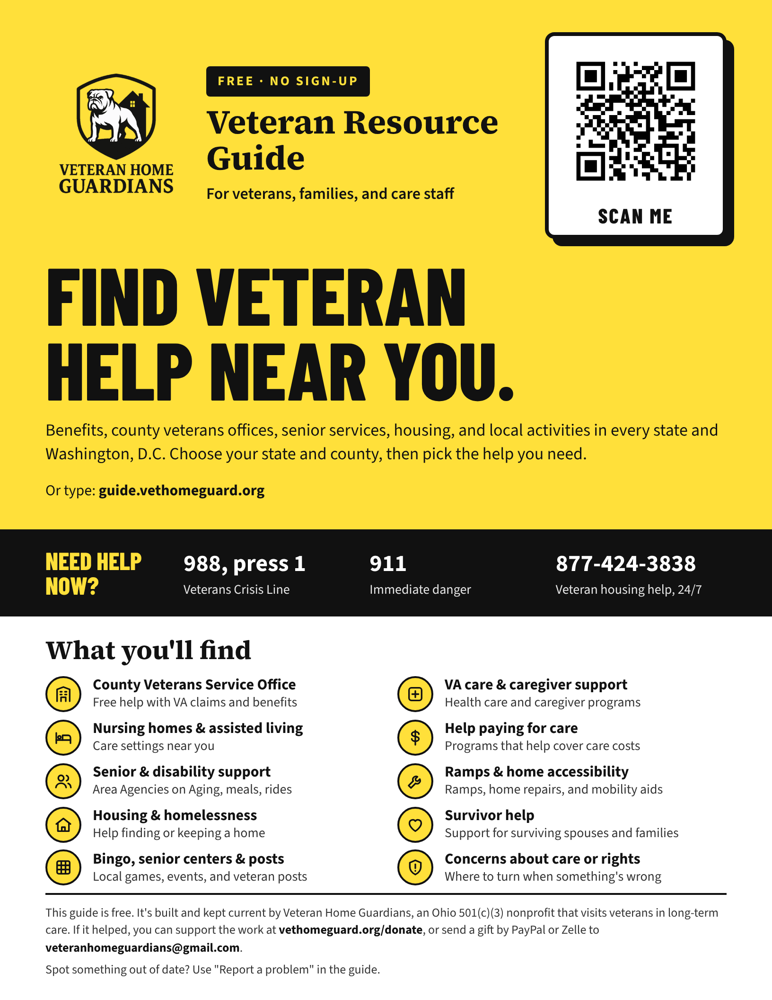

Veteran Resource Guide flyer
Letter, 8.5 × 11 in
For a bulletin board or front desk: VA clinics, county veterans offices, senior centers, nursing homes, libraries, churches and veteran posts.
Download PDF of the Veteran Resource Guide flyer Open the Veteran Resource Guide